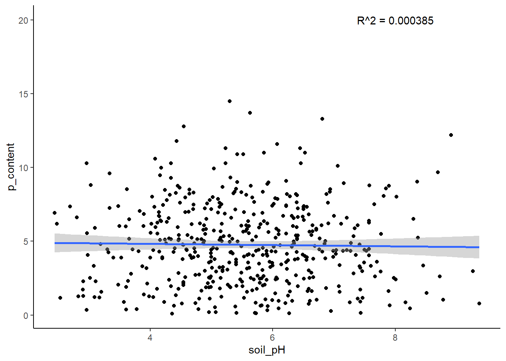

# An addition function
add_numbers <- function(x, y) {
z <- x + y
return(z)
}4.3: Using Functions to Automate Tasks
Introduction
In this lesson, we’ll learn how to write functions in R. Functions are essential for automating tasks and making your code more efficient and reusable. Let’s get started!
What is a function?
We’ve been using functions quite a lot in the course, but let’s remind ourselves exactly what a function actually is.
A function is a block of code designed to perform a specific task. A function is executed when it is called. This means that the block of code is run every time you use the function!
A function takes specific arguments as input, processes them, and returns the output.

We’ve used a lot of built-in functions already, like the mean() function.
Now, we are going to write our own, user-defined functions!
Writing Our First Function
Following the syntax from the image above, let’s write a function called add_numbers that takes two numbers as arguments and returns their sum.
Notice that we didn’t put any actual numbers in the function! Instead, we used generic (undefined) arguments (e.g., x and y) to represent the values that we will eventually supply to the function when we execute it.
Using our undefined arguments, we set up a statement (or series of statements) for the function to perform: add x and y together and save that value as an object called z.
We use the return() function to indicate that z is the value we want the add_numbers function to give back to us when it is executed.
Let’s test our function with numbers, now!
# Use our new function
add_numbers(5, 5)[1] 10# Store our result
sum <- add_numbers(10, 10)
# View our result
sum[1] 20Let’s Practice
Now try to write a function called multiply_numbers that takes three numbers as arguments and returns the product.
Make sure to test your function, and remember a function should have a name, a list of arguments, and return something.
# Multiplication function
multiply_numbers <- function(x, y, z) {
a <- x * y * z
return(z)
}
# Test function
multiply_numbers(1, 3, 3)[1] 3Exercise 1: Simple Function
Objective: Write a function called inspect that takes a data frame as an argument and prints the head and tail of the data frame.
Setup:
# Load in tidyverse first!
library(tidyverse)Warning: package 'tidyverse' was built under R version 4.2.3Warning: package 'ggplot2' was built under R version 4.2.3Warning: package 'tibble' was built under R version 4.2.3Warning: package 'tidyr' was built under R version 4.2.2Warning: package 'readr' was built under R version 4.2.3Warning: package 'purrr' was built under R version 4.2.3Warning: package 'dplyr' was built under R version 4.2.3Warning: package 'stringr' was built under R version 4.2.2Warning: package 'forcats' was built under R version 4.2.2Warning: package 'lubridate' was built under R version 4.2.3# Load the dataframe into your environment by reading the hairgrass_data.csv file
hairgrass <- read_csv('data/hairgrass_data.csv')Rows: 480 Columns: 10
── Column specification ────────────────────────────────────────────────────────
Delimiter: ","
dbl (10): location_ID, soil_pH, p_content, percent_soil_rock, max_windspeed_...
ℹ Use `spec()` to retrieve the full column specification for this data.
ℹ Specify the column types or set `show_col_types = FALSE` to quiet this message.Before we attempt to write this function, you’ll need to know about the print() function.
In R, if you have multiple expressions (in our case, head and tail) and you want to see the output of each, you need to explicitly print them using the print() function. Otherwise, R will just show the last expression it ran.
# Demonstration of the print function
print(mean(hairgrass$soil_pH))[1] 5.544271Now we can start to write our function! Write a function that prints the head and tail of the dataframe. If you’re up for an extra challenge, have the function print out the first 10 and last 10 rows (instead of 6 and 6).
# Write your function here
# Remember to use print!
load_and_inspect <- function(dataframe) {
# Print first 10 rows
print(head(dataframe, 10))
# Print last 10 rows
print(tail(dataframe, 10))
}Test your function with the hairgrass data frame.
# Test our function on hairgrass data
load_and_inspect(hairgrass)# A tibble: 10 × 10
location_ID soil_pH p_content percent_soil_rock max_windspeed_knots
<dbl> <dbl> <dbl> <dbl> <dbl>
1 1 4.9 5.49 44.5 14.9
2 2 6.94 8.53 50.5 11.0
3 3 4.36 0.0801 88.5 26.5
4 4 5.41 1.98 61 23.6
5 5 5.32 6.6 67.1 27.4
6 6 6.49 4.09 42.8 22.6
7 7 5.83 3.05 82.7 2.90
8 8 4.91 5.83 78.5 17.9
9 9 5.73 4.35 48.5 20.7
10 10 5.61 5.54 54.4 7.49
# ℹ 5 more variables: avg_uv_index <dbl>, avg_summer_temp <dbl>,
# n_content <dbl>, hairgrass_density_m2 <dbl>, penguin_density_5m2 <dbl>
# A tibble: 10 × 10
location_ID soil_pH p_content percent_soil_rock max_windspeed_knots
<dbl> <dbl> <dbl> <dbl> <dbl>
1 471 5.75 2.66 52.9 21.8
2 472 6.28 1.6 64.3 6.40
3 473 2.69 7.35 68.2 6.24
4 474 6.36 3.76 85.4 12.7
5 475 4.57 7.96 96.2 25.5
6 476 6.1 0.448 94.5 5.00
7 477 4.72 4.86 70.3 12.3
8 478 6.41 3.8 86.9 4.86
9 479 6.02 4.62 12 7.23
10 480 3.64 2.32 94.9 3.94
# ℹ 5 more variables: avg_uv_index <dbl>, avg_summer_temp <dbl>,
# n_content <dbl>, hairgrass_density_m2 <dbl>, penguin_density_5m2 <dbl>Exercise 2: Linear Regression Function
Objective: Develop a function that performs linear regression between two columns of a data frame and returns the model summary.
Some helpful hints:
- Have 2 arguments, one for each column
- In the
lm()function, you’ll want to run it by specifying the dataframe and column (likedataframe$column) rather than just using the name of the column and setting thedata = dataframeargument. It will look similar to how we run the code to get a correlation coefficient.
# Write your function here!
do_regression <- function(independent, dependent) {
# Linear model
lm_model <- lm(dependent ~ independent)
# Print result
print(summary(lm_model))
}Test the function with two columns from the hairgrass data set.
# Test function on hairgrass data
do_regression(hairgrass$soil_pH, hairgrass$hairgrass_density_m2)
Call:
lm(formula = dependent ~ independent)
Residuals:
Min 1Q Median 3Q Max
-2.95914 -0.66321 0.02364 0.65938 2.64477
Coefficients:
Estimate Std. Error t value Pr(>|t|)
(Intercept) 7.65039 0.20531 37.263 <2e-16 ***
independent 0.04972 0.03605 1.379 0.169
---
Signif. codes: 0 '***' 0.001 '**' 0.01 '*' 0.05 '.' 0.1 ' ' 1
Residual standard error: 1.026 on 478 degrees of freedom
Multiple R-squared: 0.003963, Adjusted R-squared: 0.001879
F-statistic: 1.902 on 1 and 478 DF, p-value: 0.1685Exercise 3: Plotting Function
Objective: Create a function to plot a scatter plot between two variables and add a regression line.
For complicated reasons we won’t get into, we need to do a few important things in this function to make it work:
- When you write the
ggplotcode, you’ll need to useaes_string()in place of our usualaes()function. - When you test your function with the hairgrass data, you’ll need to put the names of the two columns in quotation marks (e.g., “penguin_density_m2” instead of penguin_density_m2).
- Don’t worry about adding labels to your plot, but do add a theme.
# Write your function here!
plot_data <- function(dataframe, x, y) {
# Make plot
plot <- ggplot(dataframe, aes_string(x = x, y = y)) +
geom_point() +
geom_smooth(method = "lm") +
theme_classic()
# Return plot
return(plot)
}Test the function with two columns from the hairgrass data set.
# Test function on harigrass data
plot_data(hairgrass, "soil_pH", "p_content")Warning: `aes_string()` was deprecated in ggplot2 3.0.0.
ℹ Please use tidy evaluation idioms with `aes()`.
ℹ See also `vignette("ggplot2-in-packages")` for more information.`geom_smooth()` using formula = 'y ~ x'Bonus:
Objective: Create a function, plot_data_with_r2, that modifies the scatter plot to include the R^2 value from the linear regression.
First, outside of the function, calculate the R^2 value for your chosen variables. Then, modify your plotting function to add an r_squared argument.
Use the annotate() to add the R^2 value to the plot. You can learn more about annotate() here!
You might also want to learn about the paste() function here to specify what the value you are putting on the plot represents. It might look something like R squared = 0.4.
**Remember to use aes_string() instead of aes()!
# Write your function here!
# Calculate R-squared outside the function
r <- cor(x = hairgrass$soil_pH, y = hairgrass$p_content)
# Round the value because otherwise it is extremely long!
r_squared <- round(r^2, 6)
# Make our function
plot_with_r2 <- function(dataframe, x, y, r_squared) {
# Create the plot with points and regression line
plot <- ggplot(dataframe, aes_string(x = x, y = y)) +
geom_point() +
geom_smooth(method = "lm") +
annotate("text", x = 8, y = 20, label = paste("R^2 =", r_squared)) +
theme_classic()
# Return plot
return(plot)
}Test your function here:
# Test function on hairgrass data
plot_with_r2(hairgrass, "soil_pH", "p_content", r_squared)`geom_smooth()` using formula = 'y ~ x'
Great Work!
Remember, we will only ask you to make a function like the example at the beginning :)